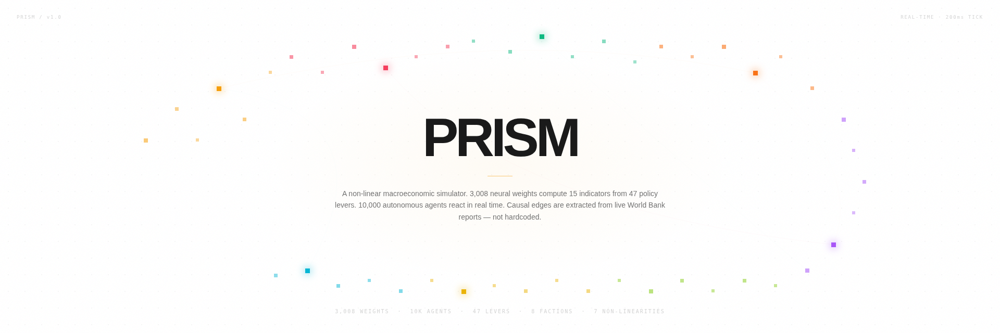
47 policy levers as rising prisms. Mid-perturbation.
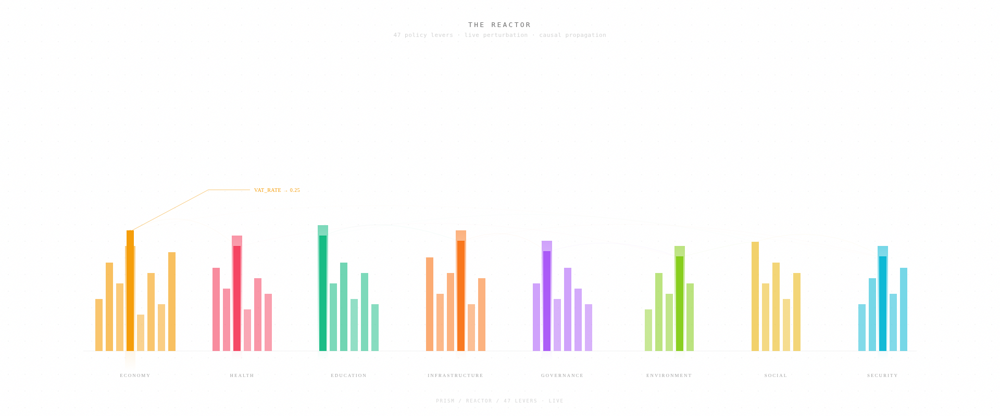
A childhood image made literal: control rods in a nuclear reactor, each one a policy variable. Touch one and the field deforms — neighbors rise, distant rods fall, a causal edge crosses the chamber. The reactor is running.
47 → 32 → 32 → 15. 3,008 weights. Forward pass, live.
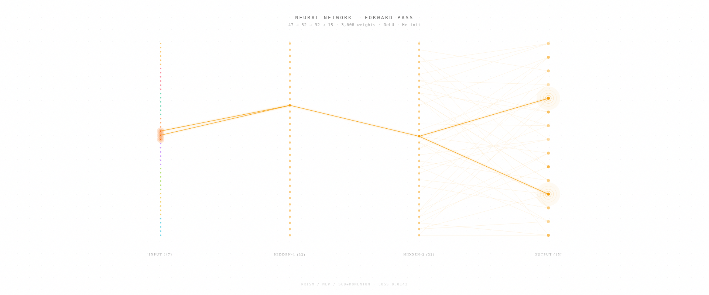
A dense multilayer perceptron. Every lever feeds every hidden neuron; every hidden neuron feeds every indicator. The bright amber paths are the signal currently propagating — the system computes all 15 indicators in milliseconds, every tick.
10,000 autonomous agents. 8 factions. Stress hot pockets.
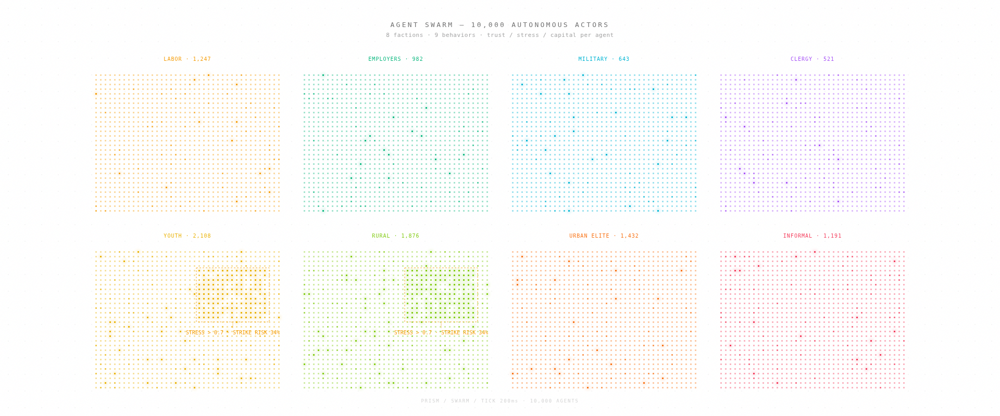
The country is not a monolith. Ten thousand agents, eight factions, each with trust, stress, capital, and mobility. When stress crosses 0.7 in a cluster, strike risk goes live — and the strain propagates outward to neighboring factions.
Edges extracted from real World Bank reports by an LLM.
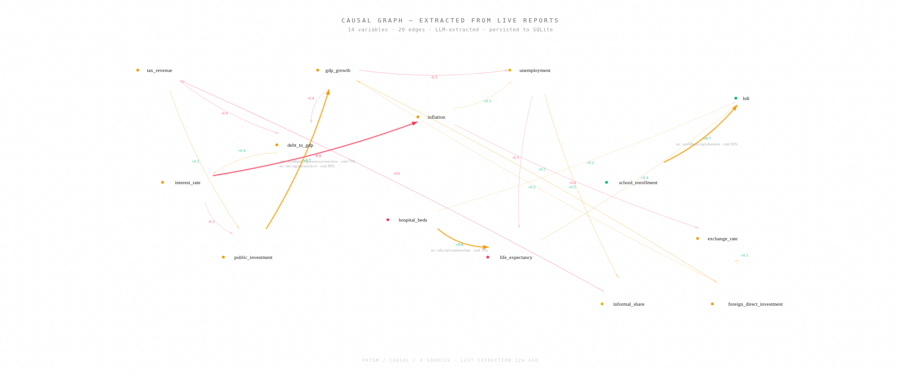
Nothing is hardcoded. An LLM reads World Bank, IMF, and WHO documents and returns quantified causal edges — each carrying a coefficient, a delay, a confidence score, and a provenance URL. Feed it more reports and the graph densifies.
Type a decree. See 2 years forward. Get a verdict.
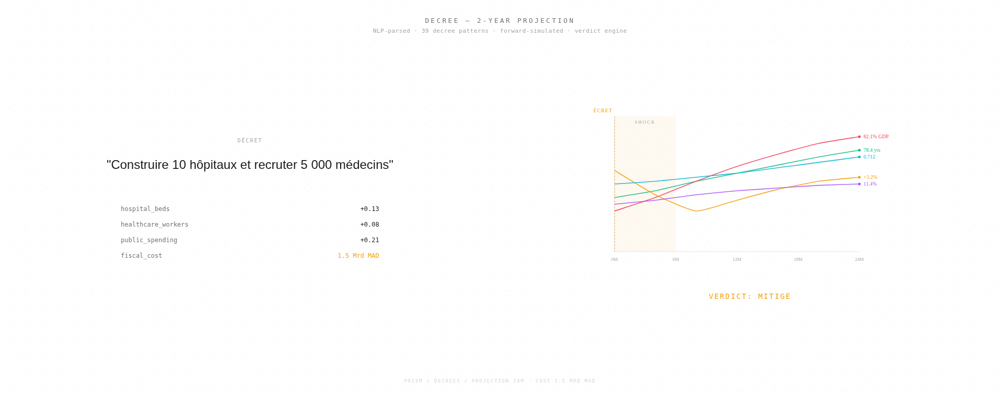
Type a decree in French. The engine parses it into lever deltas and simulates twenty-four months forward — GDP, unemployment, debt, life expectancy, HDI. The cost is declared, not hidden. At the end: a verdict. MITIGÉ. FAVORABLE. DÉFAVORABLE.
10 crisis types. Cascading chains. When fragile, three strike at once.
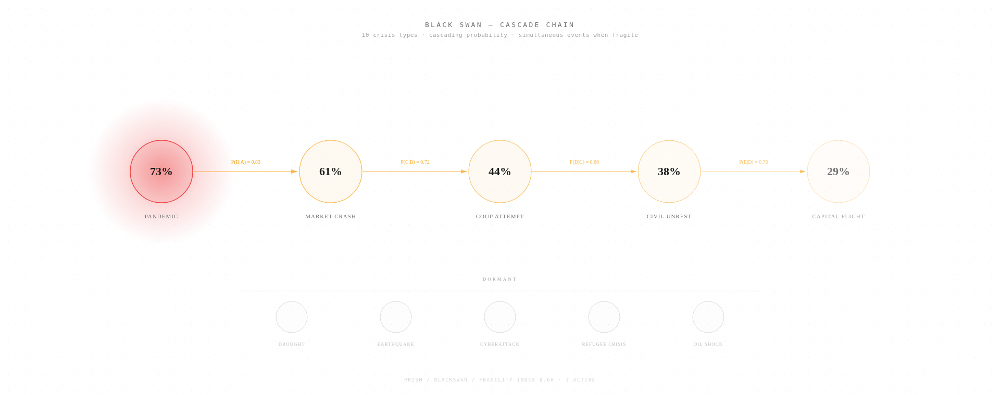
A pandemic triggers a market crash, which raises coup probability, which triggers civil unrest, which causes capital flight. Each arrow carries a conditional probability. When fragility is high, three crises strike at once — and the chain becomes a cascade.
Switching regime rewrites the weight matrix. Polarity inverts.
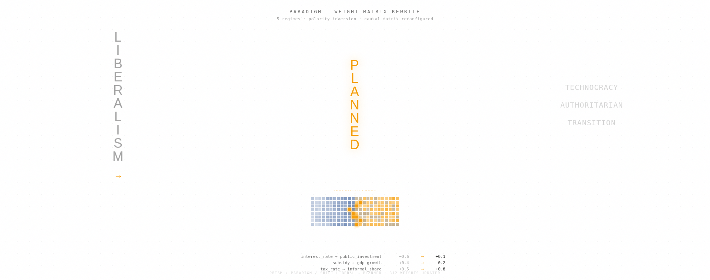
The model does not agree with you. Switching paradigm is not a preference — it is a structural rewrite of the causal weight matrix. Interest rates no longer suppress public investment. Subsidies no longer boost growth. Polarity flips. The system computes what follows.
7 layers between the network and the indicators.
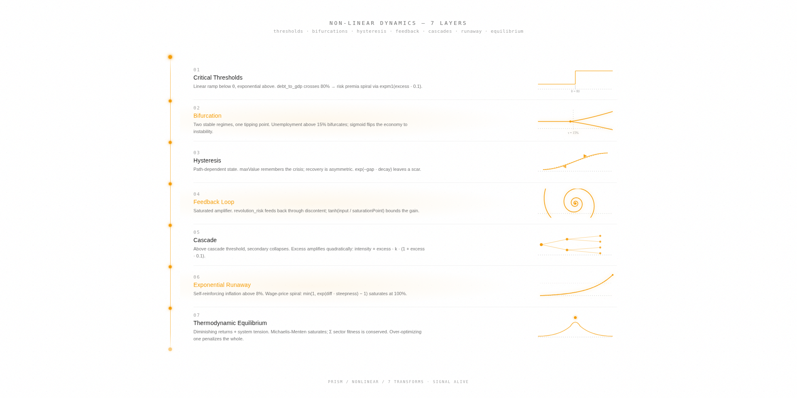
Classical neural outputs are smooth. Real economies are not. Seven non-linear transfer functions sit between the raw network and the final indicators: thresholds, bifurcations, hysteresis, feedback, cascades, runaway, equilibrium. The signal transforms as it descends.
Recovery doesn't erase the scar. The system remembers.
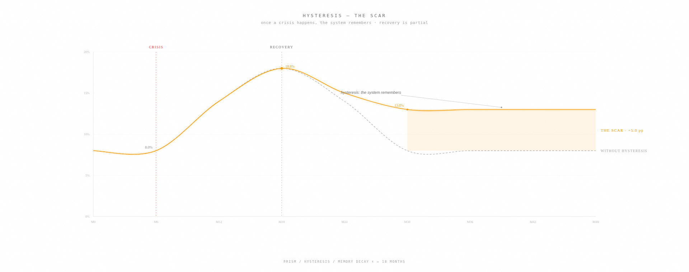
A crisis happens. Unemployment rises to 18%. Recovery begins — but stalls at 13% and plateaus. The system never returns to its pre-crisis baseline. The gap between the dashed reference and the amber trajectory is the scar: five percentage points that do not heal.
Over-optimizing one sector penalizes the whole.
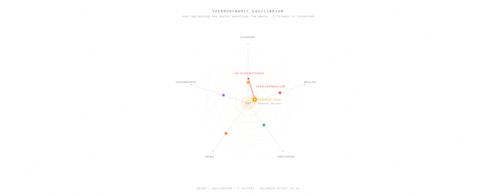
The system sits on a fitness landscape. The peak is the theoretical optimum — but the current state is balanced slightly off-center. Push GDP too hard and the system slides downhill into a lower contour. Σ sector fitness is conserved: over-optimizing one penalizes the whole.
Every lever traces to a real source. Zero mock data.
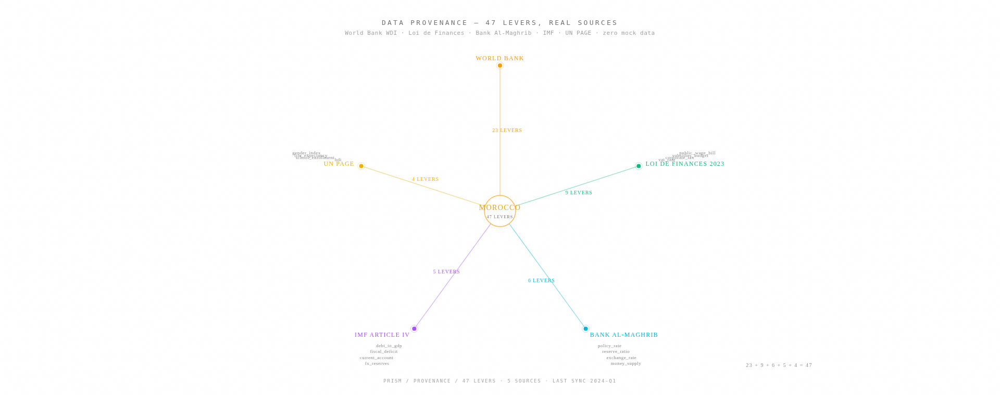
Every one of the 47 levers traces to a real publication. World Bank WDI for 23, Loi de Finances for 9, Bank Al-Maghrib for 6, IMF Article IV for 5, UN PAGE for 4. Each lever carries its indicator code, its year, its source URL. Nothing here is invented.
Des liens de liens de liens de liens de liens.
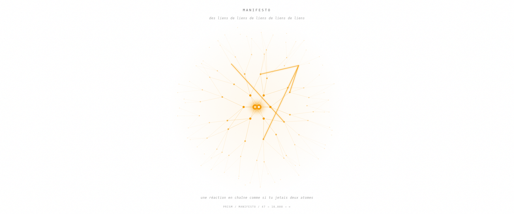
Two atoms at the center, almost touching. From them, edges radiate outward — six, then fourteen, then thirty, then sixty. The outermost nodes are tiny and dim, fading into the distance. Four bright edges mark active chain reactions. This is the dream, rendered.
The 6-layer pipeline, end to end.
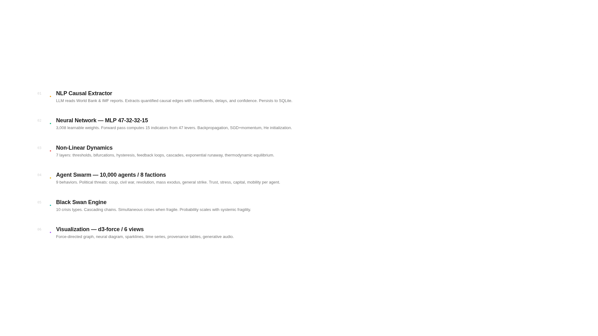
NLP extracts causal edges from real reports. The neural network forward-passes 47 levers into 15 indicators. Seven non-linear layers transform the signal. The agent swarm reacts. The black-swan engine cascades. Visualization renders it all, every tick.